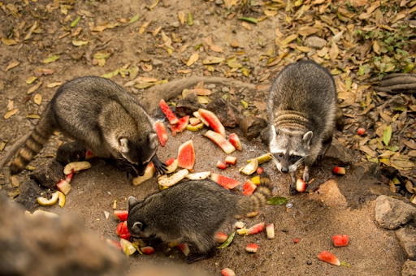
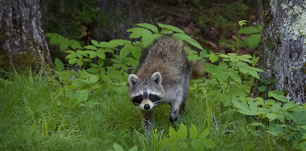

Diet
A raccoon's diet is diverse and includes both plant and animal matter. Raccoons are known to consume fruits, nuts, berries, and vegetables. However, they are equally skilled hunters and scavengers, preying on small mammals, birds, insects, and even amphibians. Raccoons are also notorious for raiding trash cans and dumpsters, showcasing their scavenging tendencies in urban settings.
Habitat
Raccoons are highly adaptable mammals, and their habitats vary widely, encompassing both natural and urban environments. They are commonly found in deciduous and mixed forests, where they utilize tree dens for shelter. Raccoons are equally at home in urban areas, taking advantage of human-made structures like attics, chimneys, and crawl spaces for nesting.
Bio
Raccoons, scientifically known as Procyon lotor, are medium-sized mammals native to North America but have also been introduced to other parts of the world. Characterized by their distinctive black mask across their eyes and ringed tail, raccoons are well-adapted to a variety of habitats.